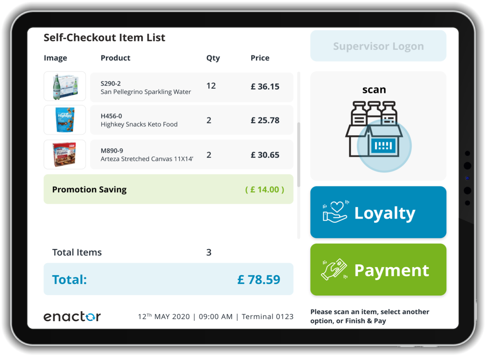

Personas: Washers & Dryers
Study of the Use and Effectiveness of Modern User Interfaces
QUESTIONS
Expectations
- Which settings do you choose by default? Why? (what do you expect it to do)
- What are the differences between options? (expected outcomes)
- How many total Options are there
- What do the empty circles mean?
- What do the stars mean / what happens when you hold buttons?
- How many options total are there?
- How long do you expect it to take?
Experience
- Does this wash/dry sufficiently? (comparison to others?)
- Does this take a reasonable amount of time?
Motives
- Are you in a rush/trying to save time?
- Does this support that? Is there anything in the way?
Challenges
- Do you ever feel frustrated or confused by the UI?
- Do you use different options? Are the many options helpful for different scenarios, like smaller loads, whites, towels, sheets, etc.?
Interface
Observations
Likable Attributes
- Time Dry is clear and effective for when you're in a rush
- Quick Wash is faster than normal...but still takes long and does not tell you how long it will take
- Music is nice! Makes you want to use it
- "It definitely looks newer..."
- Generally works well
Criticisms & Frustrations
- Duration is not clear
- Neither washer nor dryer lists how much time has elapsed nor how much time is left; you need to set your own timer if you want to know
- Sensor Dry Options also do not list how much total time drying will take, and the time varies, so you need to check on it multiple times
- Generally, washing and drying both take longer than "normal" or expected
- Bad Defaults
- Normal Dry is not the default, which every roommate uses either every time or almost every time; it's annoying to have to scroll and select it every time
- Normal Dry sometimes leaves some clothes slightly damp, yet because it's "Normal", we never select the More Dry options
- Bad Descriptions, Overcomplication, and Choice Overload:
- "I don't understand all the other options, so I don't ever use them."
- "There's no reason for all these options--a normal dryer should what a normal dryer should do."
- "I hate that...I don't know what it means."
- Uni-directional Cycling: Temperature, Water Level, and Time options only have a one button for cycling through, and we always overshoot it and have to cycle through all over again
- Inconsistent Option Listing and just Bad Design, expanded on below:"I don't get why open circle means no light...they should just have an extra [LED] for that." "That little asterisks wouldn't help...they think that'd be enough for me to understand..." "When I saw this, I thought it'd do [that], but no..."
- Lack of Transparency: "It's all sensor-based, [but] how would they know when it's dry?"
The Multitudinuous Misdirection of Modern Machines, a short essay on valuing form over function
For all customization options, there are exactly 4 LEDs, so on first look we expect there to be only 4 options each. This is not true. After some months living here, all three roommates realized there were hidden Temperature, Water Level options for the Washer. This is because when you cycle through the options, there is a 5th option where the LED is off, which some were initially confused by and others simply didn't notice for a while.
This 5th option is marked smaller and somewhat sideways of the initial customization options list with an open circle (which is likely supposed to indicate off). However, it's not part of the list, which makes it not seem like an option. Furthermore, it's not clear that it's supposed to occur on an off LED option. Two roommates felt almost antagonized by this, asking "why would they even do this?", or claiming it "deceivingly makes it seem very new. It doesn't make sense like our simple, old dryer."
Furthermore, none of the roommates realized there was actually a 6th "hidden option" marked by an asterisk and small text and placed completely below the whole list AND button! If you held the button for 3 seconds, which no one ever did in their normal use of the machines, you would trigger this extra option. If you held both buttons down for three secconds, marked by an "-*Child Lock-" between the two buttons with lines connecting it to each button, then you could engage the child lock. However, while Samsung deemed the open circle sufficient for describing an LED off state, they understood that this asterisk did nothing to indicate "hold for 3 seconds". Thus, at the very top of the selection area completely separate from the buttons or options lists, there is the "*(hold for 3 sec)". Everyone was astounded that there were these extra options and that they were indicated in this way. Again, the sentiment that Samsung was trying to look sleek and new and that they were sacrificing readability and ease of use of traditional washers/dryers. Especially after being interviewed, my roommates strongly felt that our old washers and dryers were designed much better and more honestly, as they list all of the relevant options on a single knob, let you select exact times, and directly see time elapsed.
Storyboards